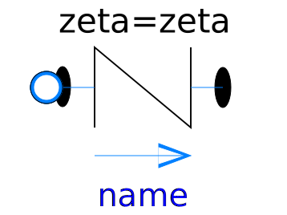
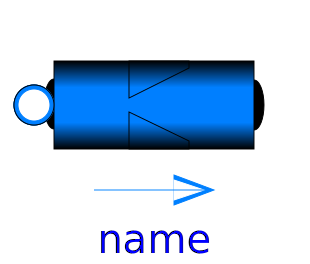
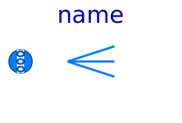
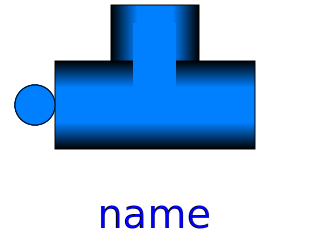

This sublibrary contains models and functions providing pressure loss correlations. All models in this library have the property that no mass and no energy is stored in the component. Therefore, none of the models have a state.
All functions are continuous and have a finite, non-zero, smooth, first derivative. The functions are all guaranteed to be strict monotonically increasing. The mentioned properties guarantee that a unique inverse of every function exists. Note, the usual quadratic pressure loss correlation
The two mentioned problems are solved in this package by approximating the characteristics around zero mass flow rates with appropriate polynomials. The monotonicity is guaranteed using results from:
| Name | Description |
|---|---|
| Flow models for bends | |
| Flow models for orifices | |
| Flow models for generic resistances | |
|  SimpleGenericOrifice | Simple generic orifice defined by pressure loss coefficient and diameter (only for flow from port_a to port_b) |
|  SharpEdgedOrifice | Pressure drop due to sharp edged orifice (for both flow directions) |
| Pressure drop in pipe due to suddenly expanding or reducing area (for both flow directions) | |
|  MultiPort | Multiply a port; useful if multiple connections shall be made to a port exposing a state |
|  TeeJunctionIdeal | Splitting/joining component with static balances for an infinitesimal control volume |
| Splitting/joining component with static balances for a dynamic control volume | |
| Base classes used in the Fittings package (only of interest to build new component models) |